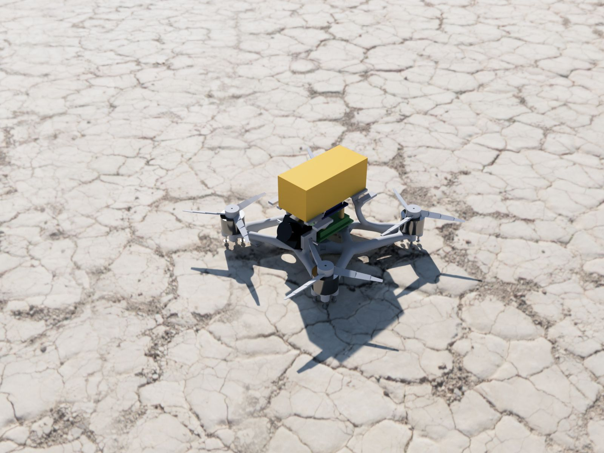
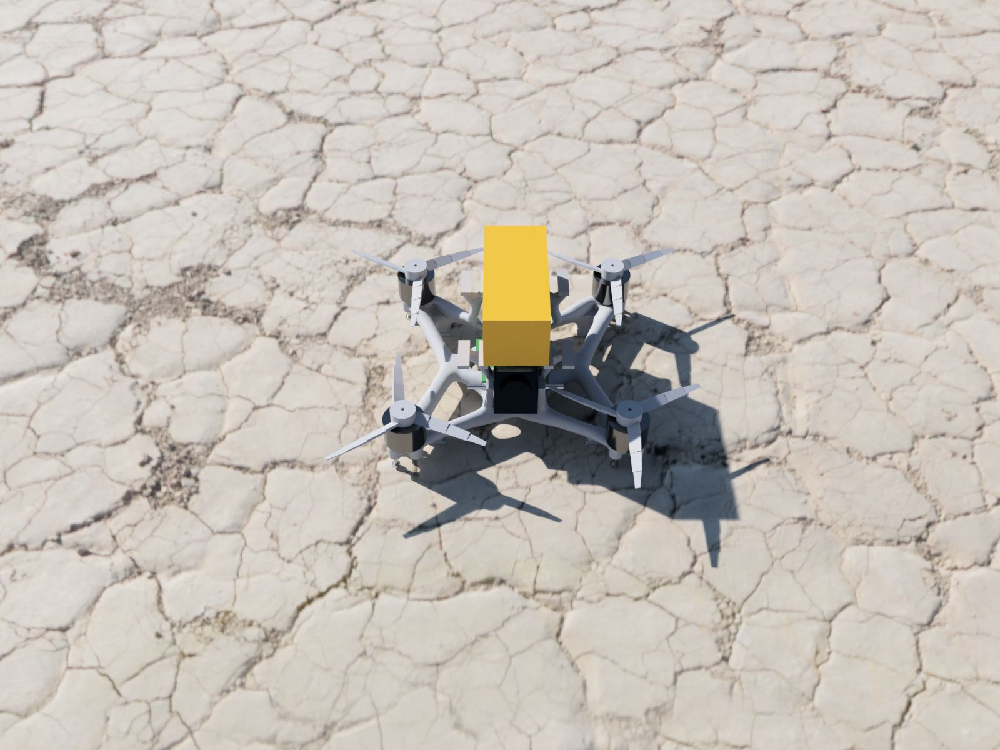

A generatively designed 3-inch FPV drone frame
The frame needed to survive crashes and avoid resonance with the motors, while keeping the complete drone under the UK CAA's 250 g threshold.


Approach
I derived eight operational load cases, including maximum thrust, arm collision and battery impact, to define the design envelope and starting geometry.
I then ran Fusion's generative optimisation under those loads with buckling, modal frequency (above 300 Hz) and 1.5 safety-factor constraints. The selected topology is 36% lighter than a comparable plate-based frame.
Build and testing
I printed the frame in PC/ABS for impact toughness. It weighs 38 g, and the fully assembled drone comes to 246 g, under the 250 g threshold.
I measured arm deflection at maximum thrust and compared it with Ansys Mechanical; the two agreed to within 18%.